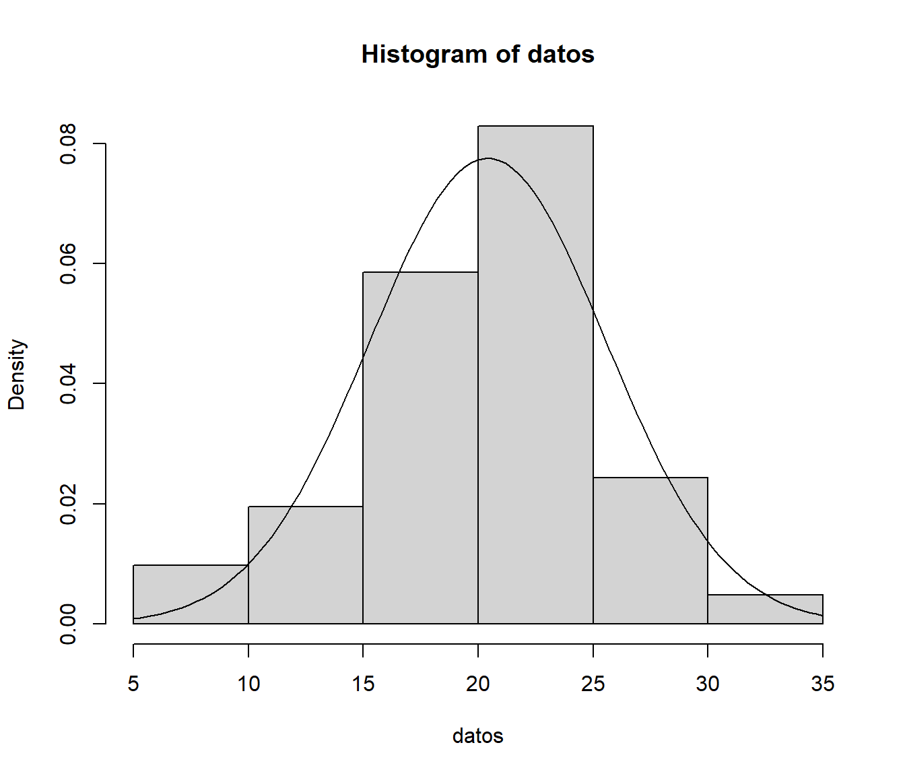
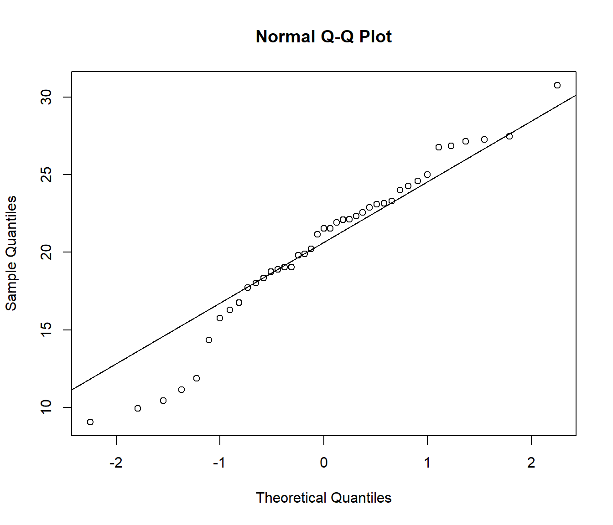
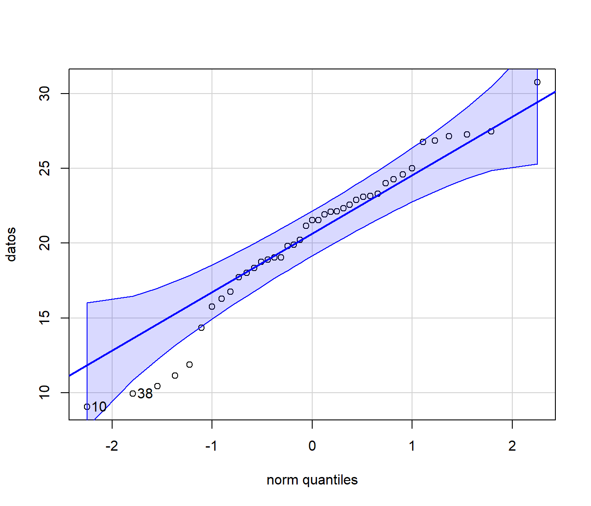
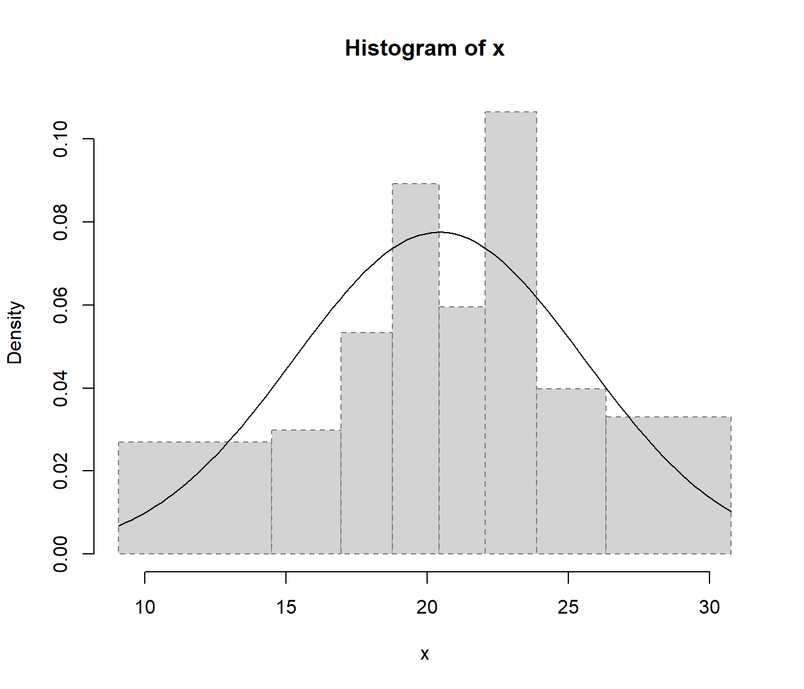

B.1 Métodos de bondad de ajuste
A partir de \(X_1,\ldots,X_n\) m.a.s. de \(X\) con función de distribución \(F\), interesa realizar un contraste de la forma: \[\left \{ \begin{array}{l} H_0:F=F_0\\ H_1:F\neq F_0 \end{array} \right.\]
En este caso interesará distinguir principalmente entre hipótesis nulas simples (especifican un único modelo) y compuestas (especifican un conjunto o familia de modelos). Por ejemplo:
| \(H_0\) simple | \(H_0\) compuesta |
|---|---|
| \(\left \{ \begin{array}{l} H_0:F= \mathcal{N}(0,1)\\ H_1:F\neq \mathcal{N}(0,1) \end{array} \right.\) | \(\left \{ \begin{array}{l} H_0:F= \mathcal{N}(\mu,\sigma^2)\\ H_1:F\neq \mathcal{N}(\mu,\sigma^2) \end{array} \right.\) |
Entre los métodos gráficos habituales estarían: histograma, gráfico de la densidad suavizada, gráfico de tallo y hojas, gráfico de la distribución empírica (o versión suavizada) y gráficos P-P o Q-Q.
Entre los métodos de contrastes de hipótesis generales (\(H_0:F=F_0\)) destacarían las pruebas: Chi-cuadrado de Pearson, Kolmogorov-Smirnov, Cramer-von Mises o Anderson-Darling. Además de los específicos de normalidad (\(H_0:F= \mathcal{N}(\mu,\sigma^2)\)): Kolmogorov-Smirnov-Lilliefors, Shapiro-Wilks y los de asimetría y apuntamiento.
B.1.1 Histograma
Se agrupan los datos en intervalos \(I_{k}=\left[ L_{k-1},L_{k}\right)\) con \(k=1, \ldots, K\) y a cada intervalo se le asocia un valor (altura de la barra) igual a la frecuencia absoluta de ese intervalo \(n_k = \sum_{i=1}^{n}\mathbf{1}\left( X_i \in [L_{k-1},L_{k}) \right)\), si la longitud de los intervalos es constante, o proporcional a dicha frecuencia (de forma que el área coincida con la frecuencia relativa y pueda ser comparado con una función de densidad): \[\hat{f}_n(x)=\frac{n_{i}}{n\left( L_{k}-L_{k-1}\right)}\]
Como ya se ha visto anteriormente, en R podemos generar este gráfico con la función hist() del paquete base.
Algunos de los principales parámetros (con los valores por defecto) son los siguientes:
hist(x, breaks = "Sturges", freq = NULL, plot = TRUE, ...)breaks: puede ser un valor numérico con el número de puntos de discretización, un vector con los puntos de discretización, una cadena de texto que los determine (otras opciones son"Scott"y"FD"; en este caso llamará internamente a la funciónnclass.xxx()dondexxxse corresponde con la cadena de texto), o incluso una función personalizada que devuelva el número o el vector de puntos de discretización.freq: lógico (TRUEpor defecto si los puntos de discretización son equidistantes), determina si en el gráfico se representan frecuencias o “densidades.”plot: lógico, se puede establecer aFALSEsi no queremos generar el gráfico y solo nos interesan el objeto con los resultados (que devuelve de forma “invisible,” por ejemplo para discretizar los valores en intervalos).
Ejemplo:
datos <- c(22.56,22.33,24.58,23.14,19.03,26.76,18.33,23.10,
21.53,9.06,16.75,23.29,22.14,16.28,18.89,27.48,10.44,
26.86,27.27,18.74,19.88,15.76,30.77,21.16,24.26,22.90,
27.14,18.02,21.53,24.99,19.81,11.88,24.01,22.11,21.91,
14.35,11.14,9.93,20.22,17.73,19.05)
hist(datos, freq = FALSE)
curve(dnorm(x, mean(datos), sd(datos)), add = TRUE)
Si el número de valores es muy grande (por ejemplo en el caso de secuencias aleatorias), nos puede interesar establecer la opción breaks = "FD" para aumentar el número de intervalos de discretización.
En cualquier caso, como se muestra en la Figura B.1, la convergencia del histograma a la densidad teórica se podría considerar bastante lenta.
Alternativamente se podría considerar una estimación suave de la densidad, por ejemplo empleando la estimación tipo núcleo implementada en la función density().
Figura B.1: Convergencia del histograma a la densidad teórica.
B.1.2 Función de distribución empírica
La función de distribución empírica \(F_n\left( x \right)=\frac{1}{n}\sum_{i=1}^{n}\mathbf{1}\left( X_i\leq x\right)\) asigna a cada número real \(x\) la frecuencia relativa de observaciones menores o iguales que \(x\). Para obtener las frecuencias relativas acumuladas, se ordena la muestra \(X_{(1)}\leq X_{(2)}\leq \cdots \leq X_{(n)}\) y: \[F_n(x)=\left \{ \begin{array}{cll} 0 & \text{si } &x<X_{\left( 1\right) }\\ \tfrac{i}n & \text{si } & X_{\left( i\right) }\leq x<X_{\left( i+1\right) }\\ 1 & \text{si } & X_{\left( n\right) }\leq x \end{array} \right.\]
Ejemplo:
fn <- ecdf(datos)
curve(ecdf(datos)(x), xlim = extendrange(datos), type = 's',
ylab = 'distribution function', lwd = 2)
curve(pnorm(x, mean(datos), sd(datos)), add = TRUE)Figura B.2: Comparación de la distribución empírica de los datos de ejemplo con la función de distribución de la aproximación normal.
B.1.3 Gráficos P-P y Q-Q
El gráfico de probabilidad (o de probabilidad-probabilidad) es el gráfico de dispersión de: \[\left \{ \left( F_0(x_{i}), F_n(x_{i}) \right) :i=1,\cdots,n\right \}\] siendo \(F_n\) la función de distribución empírica y \(F_0\) la función de distribución bajo \(H_0\) (con la que desea comparar, si la hipótesis nula es simple) o una estimación bajo \(H_0\) (si la hipótesis nula es compuesta; e.g. si \(H_0:F= \mathcal{N}(\mu,\sigma^2)\), \(\hat{F}_0\) función de distribución de \(\mathcal{N}(\hat{\mu},\hat{\sigma}^2)\)). Si \(H_0\) es cierta, la nube de puntos estará en torno a la recta \(y=x\) (probabilidades observadas próximas a las esperadas bajo \(H_0\)).
El gráfico Q-Q (cuantil-cuantil) es equivalente al anterior pero en la escala de la variable: \[\left\{ \left( q_{i}, x_{(i)}\right) : i=1, \cdots, n \right\}\] siendo \(x_{(i)}\) los cuantiles observados y \(q_{i}=F_0^{-1}(p_{i})\) los esperados17 bajo \(H_0\).
Ejemplo:
qqnorm(datos)
qqline(datos)
require(car)
qqPlot(datos, "norm")
## [1] 10 38B.1.4 Contraste chi-cuadrado de Pearson
Se trata de un contraste de bondad de ajuste: \[\left \{ \begin{array}{l} H_0:F=F_0\\ H_1:F\neq F_0\end{array} \right.\] desarrollado inicialmente para variables categóricas. En el caso general, podemos pensar que los datos están agrupados en \(k\) clases: \(C_1,\cdots,C_{k}\). Por ejemplo, si la variable es categórica o discreta, cada clase se puede corresponder con una modalidad. Si la variable es continua habrá que categorizarla en intervalos.
Si la hipótesis nula es simple, cada clase tendrá asociada una probabilidad \(p_{i}=P\left( X\in C_{i} \right)\) bajo \(H_0\) . Si por el contrario es compuesta, se trabajará con una estimación de dicha probabilidad (y habrá que correguir la distribución aproximada del estadístico del contraste).
| Clases | Discreta | Continua | \(H_0\) simple | \(H_0\) compuesta |
|---|---|---|---|---|
| \(C_1\) | \(x_1\) | \([L_0,L_1)\) | \(p_1\) | \(\hat{p}_1\) |
| \(\vdots\) | \(\vdots\) | \(\vdots\) | \(\vdots\) | \(\vdots\) |
| \(C_{k}\) | \(x_{k}\) | \([L_{k-1},L_{k})\) | \(p_{k}\) | \(\hat{p}_{k}\) |
| \(\sum_{i}p_{i}=1\) | \(\sum_{i}\hat{p}_{i}=1\) |
Se realizará un contraste equivalente: \[\left\{ \begin{array}[c]{l} H_0:\text{Las probabilidades son correctas}\\ H_1:\text{Las probabilidades no son correctas} \end{array} \right.\]
Si \(H_0\) es cierta, la frecuencia relativa \(f_{i}\) de la clase \(C_{i}\) es una aproximación de la probabilidad teórica, \(f_{i}\approx p_{i}\). Equivalentemente, las frecuencias observadas \(n_{i}=n\cdot f_{i}\) deberían ser próximas a las esperadas \(e_{i}=n\cdot p_{i}\) bajo \(H_0\), sugiriendo el estadístico del contraste (Pearson, 1900): \[\chi^2=\sum_{i=1}^{k}\frac{(n_{i}-e_{i})^2}{e_{i}}\underset{aprox.}{\sim }\chi_{k-r-1}^2,\text{ si }H_0\text{ cierta}\] siendo \(k\) el número de clases y \(r\) el número de parámetros estimados (para aproximar las probabilidades bajo \(H_0\)).
| Clases | \(n_{i}\) observadas | \(p_{i}\) bajo \(H_0\) | \(e_{i}\) bajo \(H_0\) | \(\frac{(n_{i}-e_{i})^2}{e_{i}}\) |
|---|---|---|---|---|
| \(C_1\) | \(n_1\) | \(p_1\) | \(e_1\) | \(\frac{(n_1-e_1)^2}{e_1}\) |
| \(\vdots\) | \(\vdots\) | \(\vdots\) | \(\vdots\) | \(\vdots\) |
| \(C_{k}\) | \(n_{k}\) | \(p_{k}\) | \(e_{k}\) | \(\frac{(n_{k}-e_{k})^2}{e_{k}}\) |
| Total | \(\sum_{i}n_{i}=n\) | \(\sum_{i}p_{i}=1\) | \(\sum_{i}e_{i}=n\) | \(\chi^2=\sum_{i=1}^{k}\frac{(n_{i}-e_{i})^2}{e_{i}}\) |
Cuando \(H_0\) es cierta el estadístico tiende a tomar valores pequeños y grandes cuando es falsa. Por tanto se rechaza \(H_0\), para un nivel de significación \(\alpha\), si: \[\sum_{i=1}^{k}\frac{(n_{i}-e_{i})^2}{e_{i}}\geq \chi_{k-r-1,1-\alpha}^2\]
Si realizamos el contraste a partir del p-valor o nivel crítico: \[p=P\left( {\chi_{k-r-1}^2\geq \sum \limits_{i=1}^{k}{\frac{(n_{i}-e_{i})^2}{e_{i}}}}\right)\] rechazaremos \(H_0\) si \(p\leq \alpha\) (y cuanto menor sea se rechazará con mayor seguridad) y aceptaremos \(H_0\) si \(p>\) \(\alpha\) (con mayor seguridad cuanto mayor sea).
Este método está implementado en la función chisq.test() para el caso discreto (no corrige los grados de libertad).
Ejemplo:
x <- trunc(5 * runif(100))
chisq.test(table(x)) # NOT 'chisq.test(x)'!##
## Chi-squared test for given probabilities
##
## data: table(x)
## X-squared = 3.5, df = 4, p-value = 0.4779La distribución exacta del estadístico del contraste es discreta (se podría aproximar por simulación, por ejemplo empleando los parámetros simulate.p.value = TRUE y B = 2000 de la función chisq.test(); ver también el Ejercicio ?? de la Sección ?? para el caso del contraste chi-cuadrado de independencia).
Para que la aproximación continua \(\chi^2\) sea válida:
El tamaño muestral debe ser suficientemente grande (p.e. \(n>30\)).
La muestra debe ser una muestra aleatoria simple.
Los parámetros deben estimarse (si es necesario) por máxima verosimilitud.
Las frecuencias esperadas \(e_{i}=n\cdot p_{i}\) deberían ser todas \(\geq5\) (realmente esta es una restricción conservadora, la aproximación puede ser adecuada si no hay frecuencias esperadas inferiores a 1 y menos de un 20% inferiores a 5).
Si la frecuencia esperada de alguna clase es \(<5\), se suele agrupar con otra clase (o con varias si no fuese suficiente con una) para obtener una frecuencia esperada \(\geq5\):
Cuando la variable es nominal (no hay una ordenación lógica) se suele agrupar con la(s) que tiene(n) menor valor de \(e_{i}\).
Si la variable es ordinal (o numérica) debe juntarse la que causó el problema con una de las adyacentes.
Si la variable de interés es continua, una forma de garantizar que \(e_{i}\geq5\) consiste en tomar un número de intervalos \(k\leq \lfloor n/5 \rfloor\) y de forma que sean equiprobables \(p_{i}=1/k\), considerando los puntos críticos \(x_{i/k}\) de la distribución bajo \(H_0\).
Por ejemplo, se podría emplear la función simres::chisq.cont.test() (fichero test.R), que imita a las incluidas en R:
simres::chisq.cont.test## function(x, distribution = "norm", nclass = floor(length(x)/5),
## output = TRUE, nestpar = 0, ...) {
## # Función distribución
## q.distrib <- eval(parse(text = paste("q", distribution, sep = "")))
## # Puntos de corte
## q <- q.distrib((1:(nclass - 1))/nclass, ...)
## tol <- sqrt(.Machine$double.eps)
## xbreaks <- c(min(x) - tol, q, max(x) + tol)
## # Gráficos y frecuencias
## if (output) {
## xhist <- hist(x, breaks = xbreaks, freq = FALSE,
## lty = 2, border = "grey50")
## # Función densidad
## d.distrib <- eval(parse(text = paste("d", distribution, sep = "")))
## curve(d.distrib(x, ...), add = TRUE)
## } else {
## xhist <- hist(x, breaks = xbreaks, plot = FALSE)
## }
## # Cálculo estadístico y p-valor
## O <- xhist$counts # Equivalente a table(cut(x, xbreaks)) pero más eficiente
## E <- length(x)/nclass
## DNAME <- deparse(substitute(x))
## METHOD <- "Pearson's Chi-squared test"
## STATISTIC <- sum((O - E)^2/E)
## names(STATISTIC) <- "X-squared"
## PARAMETER <- nclass - nestpar - 1
## names(PARAMETER) <- "df"
## PVAL <- pchisq(STATISTIC, PARAMETER, lower.tail = FALSE)
## # Preparar resultados
## classes <- format(xbreaks)
## classes <- paste("(", classes[-(nclass + 1)], ",", classes[-1], "]",
## sep = "")
## RESULTS <- list(classes = classes, observed = O, expected = E,
## residuals = (O - E)/sqrt(E))
## if (output) {
## cat("\nPearson's Chi-squared test table\n")
## print(as.data.frame(RESULTS))
## }
## if (any(E < 5))
## warning("Chi-squared approximation may be incorrect")
## structure(c(list(statistic = STATISTIC, parameter = PARAMETER, p.value = PVAL,
## method = METHOD, data.name = DNAME), RESULTS), class = "htest")
## }
## <bytecode: 0x0000000013587770>
## <environment: namespace:simres>Continuando con el ejemplo anterior, podríamos contrastar normalidad mediante:
chisq.cont.test(datos, distribution = "norm", nestpar = 2, mean=mean(datos), sd=sd(datos))
##
## Pearson's Chi-squared test table
## classes observed expected residuals
## 1 ( 9.06000,14.49908] 6 5.125 0.3865103
## 2 (14.49908,16.94725] 3 5.125 -0.9386680
## 3 (16.94725,18.77800] 4 5.125 -0.4969419
## 4 (18.77800,20.41732] 6 5.125 0.3865103
## 5 (20.41732,22.05663] 4 5.125 -0.4969419
## 6 (22.05663,23.88739] 8 5.125 1.2699625
## 7 (23.88739,26.33556] 4 5.125 -0.4969419
## 8 (26.33556,30.77000] 6 5.125 0.3865103##
## Pearson's Chi-squared test
##
## data: datos
## X-squared = 3.6829, df = 5, p-value = 0.5959B.1.5 Contraste de Kolmogorov-Smirnov
Se trata de un contraste de bondad de ajuste diseñado para distribuciones continuas
(similar a la prueba de Cramer-von Mises o a la de Anderson-Darling, implementadas en el paquete goftest de R, que son en principio mejores).
Se basa en comparar la función de distribución \(F_0\) bajo \(H_0\) con la función de distribución empírica \(F_n\):
\[\begin{aligned}
& D_n=\sup_{x}|F_n(x)-F_0(x)|,\\
& = \max_{1 \leq i \leq n} \left\{ |F_n(X_{(i)})-F_0(X_{(i)})|,|F_n(X_{(i-1)})-F_0(X_{(i)})| \right\}
\end{aligned}\]
Teniendo en cuenta que \(F_n\left( X_{(i)}\right) = \frac{i}n\): \[\begin{aligned} D_n & =\max_{1\leq i\leq n}\left \{ \frac{i}n-F_0(X_{(i)}),F_0(X_{(i)})-\frac{i-1}n\right \} \\ & =\max_{1\leq i\leq n}\left \{ D_{n,i}^{+},D_{n,i}^{-}\right \} \end{aligned}\]
Si \(H_0\) es simple y \(F_0\) es continua, la distribución del estadístico \(D_n\) bajo \(H_0\) no depende \(F_0\) (es de distribución libre).
Esta distribución está tabulada (para tamaños muestrales grandes se utiliza la aproximación asintótica).
Se rechaza \(H_0\) si el valor observado \(d\) del estadístico es significativamente grande:
\[p = P \left( D_n \geq d \right) \leq \alpha.\]
Este método está implementado en la función ks.test() del paquete base de R:
ks.test(x, y, ...)donde x es un vector que contiene los datos, y es una función de distribución
(o una cadena de texto que la especifica; también puede ser otro vector de datos
para el contraste de dos muestras) y ... representa los parámetros de la distribución.
Continuando con el ejemplo anterior, para contrastar \(H_0:F= \mathcal{N}(20,5^2)\) podríamos emplear:
ks.test(datos, pnorm, mean = 20, sd = 5) # One-sample ##
## One-sample Kolmogorov-Smirnov test
##
## data: datos
## D = 0.13239, p-value = 0.4688
## alternative hypothesis: two-sidedSi \(H_0\) es compuesta, el procedimiento habitual es estimar los parámetros desconocidos por máxima verosimilitud y emplear \(\hat{F}_0\) en lugar de \(F_0\). Sin embargo, al proceder de esta forma es de esperar que \(\hat{F}_0\) se aproxime más que \(F_0\) a la distribución empírica, por lo que los cuantiles de la distribución de \(D_n\) pueden ser demasiado conservativos (los \(p\)-valores tenderán a ser mayores de lo que deberían) y se tenderá a aceptar la hipótesis nula (puede ser preferible aproximar el \(p\)-valor mediante simulación; como se muestra en el Ejercicio ?? de la Sección ??).
Para evitar este problema, en el caso de contrastar normalidad se desarrolló el test
de Lilliefors, implementado en la función lillie.test() del paquete nortest
(también hay versiones en este paquete para los métodos de Cramer-von Mises y
Anderson-Darling).
Por ejemplo:
ks.test(datos, pnorm, mean(datos), sd(datos)) # One-sample Kolmogorov-Smirnov test##
## One-sample Kolmogorov-Smirnov test
##
## data: datos
## D = 0.097809, p-value = 0.8277
## alternative hypothesis: two-sidedlibrary(nortest)
lillie.test(datos)##
## Lilliefors (Kolmogorov-Smirnov) normality test
##
## data: datos
## D = 0.097809, p-value = 0.4162Típicamente \(\left \{ p_{i}=\frac{\left(i-0.5 \right)}n : i=1, \cdots, n \right\}\).↩︎